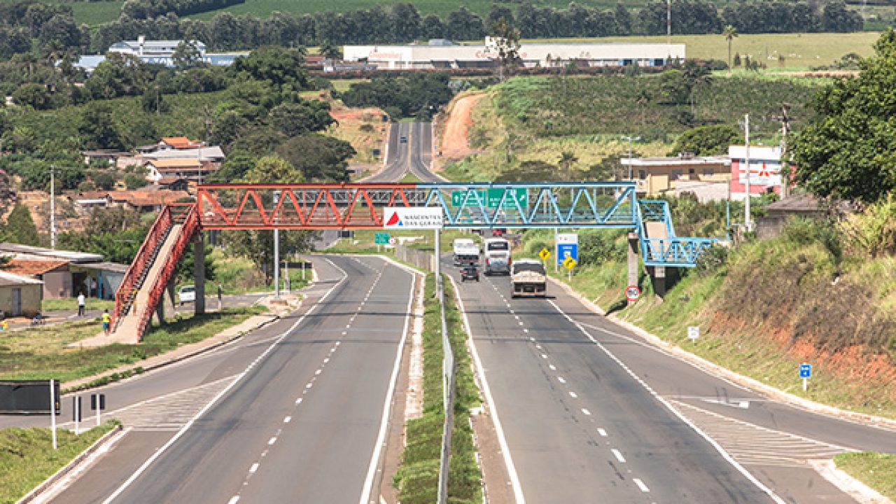

Motociclista e pedestre morrem em atropelamento na MG-050
Um motociclista de 39 anos e uma pedestre de 47 atropelada por ele no km 57 da rodovia MG-050, na última sexta-feira (24), em Juatuba, Região Metropolitana de Belo Horizonte, morreram antes da chegada da Polícia Militar ao local.
Os militares foram acionados por volta das 23h, mas os envolvidos no acidente já não apresentavam sinais vitais no momento de sua chegada. O veículo, uma motocicleta Honda CBR 1000, se encontrava a cerca de 100 metros dos corpos. Uma equipe do pelotão da cidade de Juatuba foi acionada para desviar o trânsito para a marginal da rodovia até a chegada da perícia,que constatou os óbitos. O acidente aconteceu no sentido da cidade de Mateus Leme.
Os militares foram acionados por volta das 23h, mas os envolvidos no acidente já não apresentavam sinais vitais no momento de sua chegada. O veículo, uma motocicleta Honda CBR 1000, se encontrava a cerca de 100 metros dos corpos. Uma equipe do pelotão da cidade de Juatuba foi acionada para desviar o trânsito para a marginal da rodovia até a chegada da perícia,que constatou os óbitos. O acidente aconteceu no sentido da cidade de Mateus Leme.